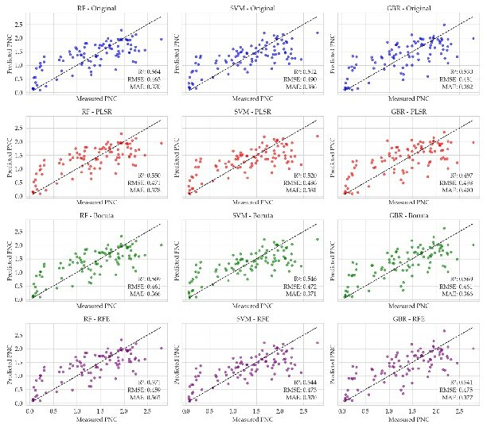

We archived 180 spectra from 60 Russet Burbank plots near Carberry. The archive links field canopy, fresh-leaf and dried-powder spectra with plot identifiers, nitrogen treatments and laboratory petiole nitrate values.
Publications
Search by title, topic, or journal. Open a paper’s figures and research notes to see the methods and findings.
-
-
The 2024–2025 study paired multispectral data and canopy structure from LiDAR with harvest measurements across 172 plots. On the held-out test set, the best joint model reached an R² of 0.60 for tuber yield, compared with 0.26 for yield-only modelling. The best multi-task model had an RMSE of 3.13 t/ha.
-
The same crop was measured at canopy scale and under controlled laboratory conditions. Fresh-leaf spectra gave the best 1D-CNN result (R² = 0.90). Aligning field spectra to the fresh-leaf reference raised the field result from 0.77 to 0.82.
Figures and research notes

Paper Fig. 1 · Field and laboratory spectroscopy setups · CC BY-NC-ND 4.0 
Paper Fig. 6 · Field model validation after calibration transfer · CC BY-NC-ND 4.0 -
This review examined what hyperspectral imaging can add to early potato disease scouting in Western Canada. It identifies a central field problem: disease, nutrient stress and other sources of crop variability can produce overlapping spectral responses.
Figures and research notes
What a spectral change can mean
- Disease stress
- A change in plant condition may appear before visible symptoms.
- Other stress
- Nutrient or environmental effects can produce similar patterns.
Conceptual summary of the review. What field validation adds
- Imagery
- Locates changes across plants or fields.
- Ground observations
- Help determine what caused the change.
- Independent trials
- Test whether the result transfers to other settings.
Interpretive overview based on the review. -
Two seasons in Manitoba provided paired drone imagery and laboratory petiole nitrate measurements. Among the feature-selection and model combinations evaluated, random forest with recursive feature elimination had the strongest reported fit (R² = 0.571).
Figures and research notes

Paper Fig. 2 · Carberry study site and trial layout · CC BY 4.0 
Paper Fig. 5 · Measured and predicted petiole nitrate across models · CC BY 4.0 -
This study tested satellite image fusion in erosion-prone cropland in South Moravia, Czech Republic. Fusing PlanetScope SuperDove with selected Sentinel-2 bands and including terrain information gave the best Gaussian process regression result (R² = 0.83, RMSE = 3.3 g/kg).
Figures and research notes
Inputs to soil carbon mapping
- PlanetScope SuperDove
- Spatial detail.
- Sentinel-2
- Additional spectral information.
- Terrain data
- Landscape context associated with erosion and deposition.
Original schematic based on the article. Best model fit
R² on a 0–1 scale
Gaussian process regression, as reported in the article. -
This review brought together Canadian work on estimating potato yield and nitrogen status with remote and proximal sensing. It found that results were concentrated in a few provinces and pointed to the need for evaluation across more growing regions.
Figures and research notes
Two scales of sensing
- Proximal sensing
- Measurements near the crop, often at leaf or canopy level.
- Remote sensing
- Imagery from aerial or satellite platforms over larger areas.
Original overview based on the review. Two questions for a field study
- Nitrogen status
- Can midseason measurements distinguish crop nutrient status?
- Yield
- Does the estimate remain useful across sites and growing seasons?
Research questions framed from the published review. -
The study compared cadmium in irrigated and rainfed wheat soils and control sites in Hamadan, western Iran. Cadmium concentrations and mobility differed by land use, and the analysis examined how soil properties relate to retention.
Figures and research notes
Mean soil cadmium by land use
mg/kg
Original chart using means reported in the article. Soil factors associated with cadmium retention
- Soil composition
- Lime, clay and organic matter.
- Other metals
- Lead was also associated with cadmium retention in the model.
<a href="https://media.springernature.com/m312/springer-static/image/art%3A10.1007%2Fs10653-023-01535-6/MediaObjects/10653_2023_1535_Fig1_HTML.png">Publisher figure 1</a> · <a href="https://media.springernature.com/m312/springer-static/image/art%3A10.1007%2Fs10653-023-01535-6/MediaObjects/10653_2023_1535_Fig6_HTML.png">Publisher figure 6</a>


No papers match. Try a different search or year.